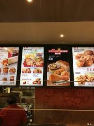
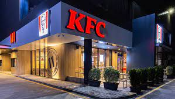
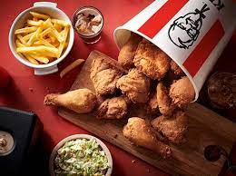

KFC first entered the South African market in 1971. The company was forced to divest its 60 company owned outlets and trademarks to a South African holding company called Devco in 1987 after the US Congress passed a law forbidding American companies from owning South African assets.
The company's 120 franchised outlets were not affected. KFC continued to collect an administrative fee from Devco. The company reacquired its former assets when sanctions were lifted in 1994.
By 1994 there were around 300 KFC outlets in the country.
As of 2021, there are 960 KFC outlets in South Africa, and the fast food chain has more outlets in the country than any other fast food brand.
Ten percent of outlets are company owned, and 90 percent are franchise owned.
Outlets sell the regional pap dish as well as other dishes unique to their menu in South Africa.
South Africa is one of the few countries where KFC does not sell PepsiCo owned soft drinks, due to the company's historically small presence in the country.
All of the chicken sold is reared in South Africa.


